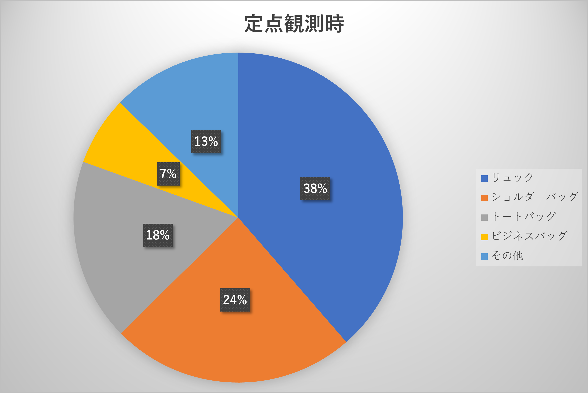
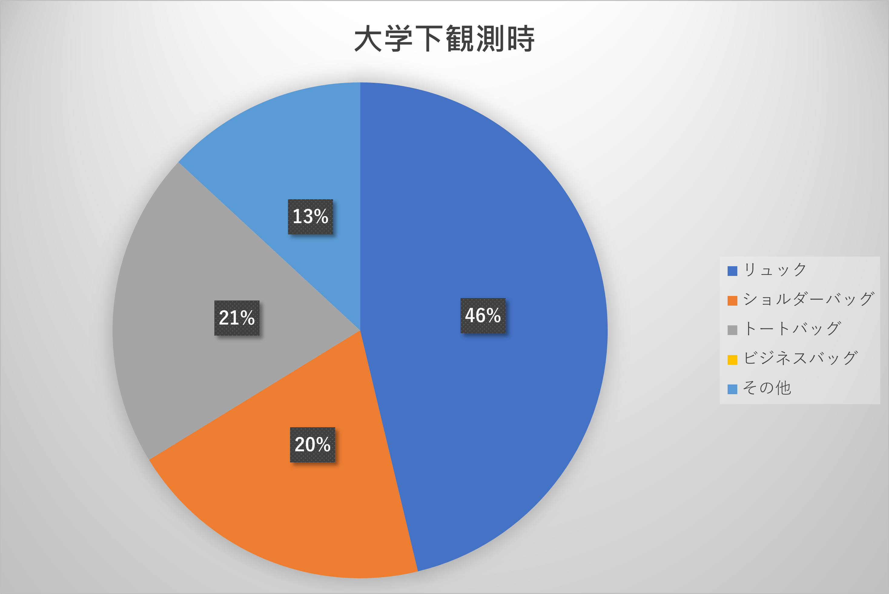

調査概要
我々7班は日産グローバル本社ギャラリーからはまみらいウォークにかけて歩いている人がどのようなかばんをつけているのかをテーマに2023年10月17日 13：58～14：18
にかけて調査を行った。調査場所は移動観察ではMMCからはまみらいウォーク、定点観測ははまみらいウォークの横浜駅側で行った。
また、調査を行うにあたってかばんの形状や大きさに焦点を当てた。
調査結果
まず観測結果としては下の表を参照してほしい。
| 分類 | 移動観測 | 定点観測 | 大学下観測 |
|---|---|---|---|
| リュック | 約74人（約40%） | 約188人(約38%) | 約74人(約46%) |
| ショルダーバッグ | 約38人(約20%) | 約117人(約24%) | 約32人(約20%) |
| トートバッグ | 約34人(約18%) | 約87人(約18%) | 約33人(約21%) |
| ビジネスバッグ | 約19人(約10%) | 約33人(約7%) | ー |
| その他 | 約23人(約12%) | 約62人(約13%) | 約21人(約13%) |
| 合計 | 計188人 | 計487人 | 計160人 |
より分かりやすいよう、円グラフも掲載する。
- 
- 
基本的にはリュック、ショルダーバッグ、トートバッグ、ビジネスバッグ、その他の順で多かった。しかし大学下ではビジネスバッグを使っているひとはおらず
僅差ではあるがショルダーバッグよりもトートバッグを使っている人が多かった。
個人的に気になったこと
・全体を通してリュックを使っている人が多い。…①・一定時間毎に人通りが多くなる。…②
・手ぶらでいる人が多かった。…③
気になったことに対しての考察
①について
リュックは本体を背負うという形になるので追加の荷物などがない限りは必然的に両手が空き、とても便利で楽という点が考えられる。
②について
大がかりな考察となるため後に述べる。
③について
定点観測や大学下観測でおもったより手ぶらでいる人たちが多かったので考えてみることにする。まずスーツを着ていた大人の人たちだが、おそらく観測した時間帯が
13：58～14：18だったので会社員のお昼休みだと考えられる。
次に大学生にも多かったという点だが、シラバスや大学のパンフレットを読むと普通にフル単をとれば大学3～4年生はもう取らなければいけない単位がゼミと必修くらい
であることがわかる。もしそのゼミや必修がPCだけを使うものだとしたらわざわざ持ってくるよりも大学のロッカーを使えばいいのでそのゼミが終わって帰っていく人や
逆にゼミが始まるひとだと考えられる。
リュックは本体を背負うという形になるので追加の荷物などがない限りは必然的に両手が空き、とても便利で楽という点が考えられる。
②について
大がかりな考察となるため後に述べる。
③について
定点観測や大学下観測でおもったより手ぶらでいる人たちが多かったので考えてみることにする。まずスーツを着ていた大人の人たちだが、おそらく観測した時間帯が
13：58～14：18だったので会社員のお昼休みだと考えられる。
次に大学生にも多かったという点だが、シラバスや大学のパンフレットを読むと普通にフル単をとれば大学3～4年生はもう取らなければいけない単位がゼミと必修くらい
であることがわかる。もしそのゼミや必修がPCだけを使うものだとしたらわざわざ持ってくるよりも大学のロッカーを使えばいいのでそのゼミが終わって帰っていく人や
逆にゼミが始まるひとだと考えられる。
②についての考察
一定時間毎に人通りが増えてたことに疑問をもったので考察をしていく。まず考えられることは横浜駅の電車が来たタイミングとその日がたまたまそういう日だったの2点だ。
まずYahooの時刻表から該当時間のものをピックアップし、集計をとった。すると一部を除き各分大体2～3路線程度が停車するとわかった。
また人通りが多くなったタイミングは14時の2,8,15,18分ごろだった。移動時間は3分程度であり、それを下の組み合わせると…
表の6や5などの大きな数字の部分と合致したのである!予想してはいたけど
またそうでない数字でも対象が京急や根岸、横浜線など比較的乗車人数の多い路線になっていた。
結論!私の予想通り電車のタイミングで人通りが多くなっていた。曜日別で調べても面白いかもしれない。
まずYahooの時刻表から該当時間のものをピックアップし、集計をとった。すると一部を除き各分大体2～3路線程度が停車するとわかった。
また人通りが多くなったタイミングは14時の2,8,15,18分ごろだった。移動時間は3分程度であり、それを下の組み合わせると…
表の6や5などの大きな数字の部分と合致したのである!
またそうでない数字でも対象が京急や根岸、横浜線など比較的乗車人数の多い路線になっていた。
結論!私の予想通り電車のタイミングで人通りが多くなっていた。曜日別で調べても面白いかもしれない。
反省点
・バッグの種類の定義を決め切れていなかった・定点観察を早く切り上げてしまった
・ 写真、動画がうまく記録できなかった
EX.他の7班のまとめ!
L o a d i n g . . .